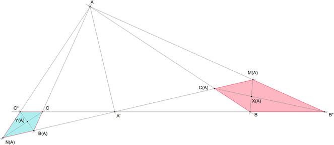

De investigación . Propuesto por Juan Bosco Romero Márquez, profesor colaborador de la Universidad de Valladolid
Problema 305: Sea el triángulo ABC y dada la ceviana arbitraria AA' donde A´, varia sobre el lado BC. Construimos los triángulos rectángulos en el vértice A, que denotamos por ACB* y ABC* donde B* y C* son los puntos más próximos a B y C, y situados tal vez en la prolongación del lado BC. Por A' trazamos la recta perpendicular a AA', y los puntos de corte de ésta, con AC, AC*, AB, AB* los designamos por B(A),N(A),C(A), M(A), respectivamente. Y, con ellos, construimos los cuadriláteros P(A) =C(A)BB*M(A) y Q(A)=CB(A)N(A)C*. a) SI X(A) e Y(A) son los puntos que se obtienen como intersección de las diagonales de los cuadriláteros P(A) y Q(A), respectivamente, entonces X(A), A', Y(A) están alineados. b) Lugares geométricos descritos por los puntos X(A), e Y(A), cuando A' varía sobre la recta que contiene al lado BC, respectivamente.
Solución de José María Pedret, Ingeniero Naval. Esplugues de Llobregat (Barcelona). (02 de abril de 2006) |
|
APARTADO (a) |
|
Podemos verlo de dos maneras rapidísimas
 MÉTODO 1 Sea la elación (homología con centro en el eje) de eje AA' y centro en A', X(A) e Y(A) son puntos homólogos y por lo tanto alineados con A'. MÉTODO 2 Si consideramos la proyección desde A entonces los puntos C*, C, A', B, B* son proyectados sobre N(A), B(A), A' , C(A), M(A). Por definición X(A), Y(A) están sobre el eje de homografía y como es una proyección A' es imagen de sí mismo y también está sobre el eje de homografía. |
|
APARTADO (b) |
|
Puede verse, por ejemplo, con CABRI que los lugares de X(A), Y(A) son cúbicas. X(A) pasa por B y B* . Y(A) pasa por C y C* |